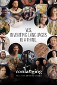
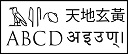

My name is Nicolas and the hobby I will be discussing about is the creation of writing systems. My interest in this unique hobby comes from my educational background. I have a Bachelors degree in Anthropology and my concentrations were in archaeology and linguistics, so looking at ancient writing systems were always fascinating to me. What I enjoy about this the most is the aesthetics and the complexity of writing systems. While I have always had an interest in writing systems, I've only recently attempted to create one myself.


 Images photographed and provided by me.
Images photographed and provided by me.
If someone was going to get into this type of hobby, firstly they would have to know the different types of writing systems. For example, a native english speaker would be comfortable with alphabets. A native Japanese speaker would most likely go with a syllabary type of writing system. The easy part about this is that the creator can make their own set of rules for the writing system, so anyone can do it. As for myself, the writing system I am currently developing is based on an alphabetic system of phonetic notation, which means each symbol represents a phonetic sound.


 Images photographed and provided by me.
Images photographed and provided by me.
There are plenty of helpful resources out there but it will vary depending on the objective of the creator. There is a documentary called Conlanging, The Art of Crafting Tongues that shows multiple invented languages, even from popular TV series like Game of Thrones. Another resource I use is a website called Omniglot which covers all types of languages such as historical or constructed. Once I complete my writing system, I plan to submit it to that site for display. Lastly, Wikipedia's list of writing systems is also useful to explore the different types of writings and gain ideas.
Image credit from omniglot.com Image credit from omniglot.com This is file is under the Creative Commons Attribution-Share Alike 4.0 International license.